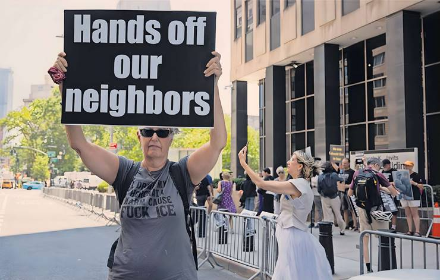

Taylor Nicole Rogers — New York

A growing number of US businesses complain they are dealing with a deluge of paperwork as the Trump administration expands audits of their employment authorisations in its push to deport undocumented migrants.
While the media are focused on images of masked Immigration and Customs Enforcement (ICE) agents storming farms, factories and construction sites to arrest foreign nationals, executives are more worried about ICE's growing scrutiny of the forms they file to demonstrate that their staff are authorised to work in the US, called “I-9”.
More than a dozen human resources leaders, global mobility professionals and their immigration attorneys told the Financial Times that they are stuck in “I-9 hell” as they race to identify and fix errors on the forms before receiving a dreaded Notice of Inspection.
Employers under audit are given three days to hand over I-9 forms and supporting documents for all current employees. Errors as small as forgetting to tick a box can result in fines that start at $2,861 per violation and often stretch into the millions, plus criminal charges for executives. In April, ICE said it fined three Denver businesses more than $8mn for employing unauthorised workers.
Last month, the general manager of a San Diego powder-coating business was sentenced to one year of probation after pleading guilty to hiring undocumented immigrants without authorisation to work, the justice department said.
“I said it couldn't get worse,” said John Mazzeo, associate general counsel at job applicant screening provider Vertical Screen. “It happened to get worse.”
The panic among employers has reached a fever pitch since May, when ICE said that its agents visited several Washington DC restaurants to initiate audits in person. The notices are traditionally sent via mail or email.
The Trump administration is “working with American employers to ensure they have the legal workforce they need to be successful,” White House spokesperson Abigail Jackson said, adding that recent worksite raids had “rescued migrant children” from a marijuana facility and resulted in the arrest of a paedophile.
People familiar with the agency’s thinking said that while deporting undocumented immigrants with criminal records remained the priority, auditing employers had emerged as a cost-effective way for agents to identify potential targets for removal.
ICE does not regularly publish data on the number of audits it is conducting, leaving employers to rely on their personal networks for information on the crackdown.
Shaun Staller, a business immigration partner at law firm Obermayer, said that he had “certainly” seen a substantial increase in audits since Donald Trump took office in January.
Audits also surged during Trump’s previous term, jumping 374 per cent between the end of the Obama administration in 2017 and 2019.
“There was talk in Trump one but nothing like this,” said Muzaffar Chishti, a senior fellow at the Migration Policy Institute who studies worksite enforcement. “This is completely different in scale.”
Lawyers said that ICE initially seemed to be targeting small, service sector businesses in big cities, but that its net was expanding.
The growing worry in the human resources industry is what prompted one Atlanta-based executive to initiate an audit of her technology start-up’s I-9 records for its 700 employees.
“Our audit revealed many people with expired [Employment Authorisation Documents], so we had to let them go,” said the executive, who requested their name be withheld because they feared retribution from their employer. “It’s I-9 hell.”
Employers complain that simply preparing for an ICE inspection is costly, as it typically involves hiring outside counsel and can result in needing to replace workers.
Vertical Screen has had its “best year ever” as employers jostle for help with getting their paperwork in order, Mazzeo said.
Since 1986, US employers have been responsible for verifying that anyone they hire is legally allowed to work in the country. But the complexity of the form itself means that “it’s very common for employers not to have [complete] records,” Staller said.
The four-page I-9 form is so technical that US Citizenship and Immigration Services publishes an eight-page manual on how to complete it. Employees can present more than 50 combinations of documents to prove their identity and employment authorisation, according to an analysis by the American Immigration Lawyers Association.
HR executives also complain that the Trump administration added a new layer of complexity to the process with its efforts to roll back Biden-era programmes that extended legal status to migrants from unstable countries, meaning that documents submitted by hundreds of thousands of workers from Haiti are suddenly invalid.
“I would be shocked to hear of any company of size, you know 1,000 people, where they do not at least have to have a conversation with someone about a fake document,” said Mazzeo, who is also a former ICE attorney.
“It’s just so prevalent, especially with the scrutiny [ICE] is now giving it.”